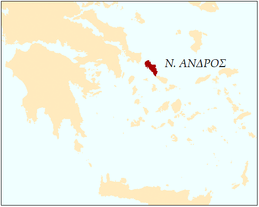

ΝΗΣΟΣ ΑΝΔΡΟΣ
ΑΠΟΔΟΣΗ ΑΝΑΓΛΥΦΟΥ ΜΕ ΦΩΤΟΣΚΙΑΣΗ
ΚΛΙΜΑΚΑ 1:250000
ΑΠΟΔΟΣΗ ΑΝΑΓΛΥΦΟΥ ΜΕ ΥΨΟΜΕΤΡΙΚΕΣ ΚΑΜΠΥΛΕΣ
ΚΛΙΜΑΚΑ 1:150000 ΚΑΙ 1:50000
ΕΓΚΑΡΣΙΑ ΜΕΡΚΑΤΟΡΙΚΗ ΠΡΟΒΟΛΗ
ΧΑΡΤΟΣΥΝΘΕΣΗ: ΕΡΙΟΛΑ ΙΜΠΕΡΣΙΜΗ
ΨΗΦΙΑΚΗ ΤΕΧΝΟΛΟΓΙΑ ΚΑΙ ΧΑΡΤΟΓΡΑΦΙΚΗ ΠΑΡΑΓΩΓΗ
ΔΠΜΣ ΓΕΩΠΛΗΡΟΦΟΡΙΚΗ
Γενικές Πληροφορίες
Η Άνδρος είναι νήσος στο Αιγαίο πέλαγος, νοτιοανατολικά της Εύβοιας. Είναι το βορειότερο νησί των Κυκλάδων και το δεύτερο μεγαλύτερο σε έκταση, μετά τη Νάξο. Εκτείνεται από βορειοδυτικά προς τα νοτιοανατολικά, καταλαμβάνοντας έκταση 381 τ. χλμ. Έχει πληθυσμό 9.170 κατοίκων. Πρωτεύουσα του νησιού είναι η Άνδρος ή Χώρα, ενώ το λιμάνι του είναι το Γαύριο. Η Άνδρος συνδέεται με την ηπειρωτική Ελλάδα ακτοπλοϊκώς μέσω της Ραφήνας.
Διάγραμμα Θέσης

Λήψη Πληροφοριών
Click on the map to get more information.
Information.
Αναζήτηση
Τραπεζικά Καταστήματα και ΑΤΜ
Στο νησί της Άνδρου υπάρχουν έξι τραπεζικά καταστήματα και τέσσερα ΑΤΜ χωροθετημένα σε τρεις διαφορετικούς οικισμούς του νησιού.